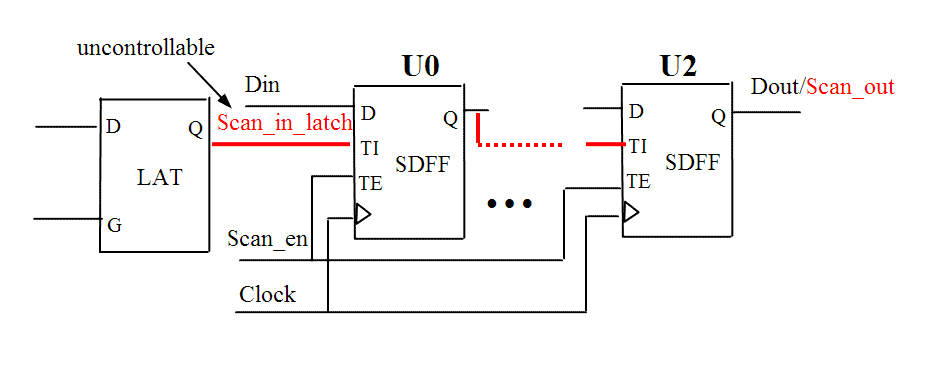

| Description | Unless you are using an advanced test strategy (e.g., JTAG controller), scan-in input ports must be controllable from the boundary to load the scan chains. |
| Policy | DESIGN |
| Ruleset | DFT |
| Language | VHDL/Verilog |
| Type | Hardware |
| Severity | Error |
This is an example of invalid Verilog code, followed by a circuit diagram that illustrates the problem:
module ntl_dft15_top(Clock, Scan_en, Scan_in, Din, Dout); input Clock,Scan_en, Scan_in, Din; output Dout; reg net_1, net_2; wire Scan_in_int, en_int; // NTL_DFT15 fires -- en_int is a interior uncontrollable signal assign Scan_in_int = en_int ? Scan_in : 1'bz; // scan_in_int is uncontrollable from top // Scan DFF -- SDFF SDFF U1(.D(Din), .CP(Clock), .TI(Scan_in_int), .TE(Scan_en), .Q(net_1)); SDFF U2(.D net_1), .CP(Clock), .TI(net_1), .TE(Scan_en), .Q(net_2)); SDFF U3(.D(net_2, .CP(Clock), .TI(net_2), .TE(Scan_en), .Q(Dout)); endmodule